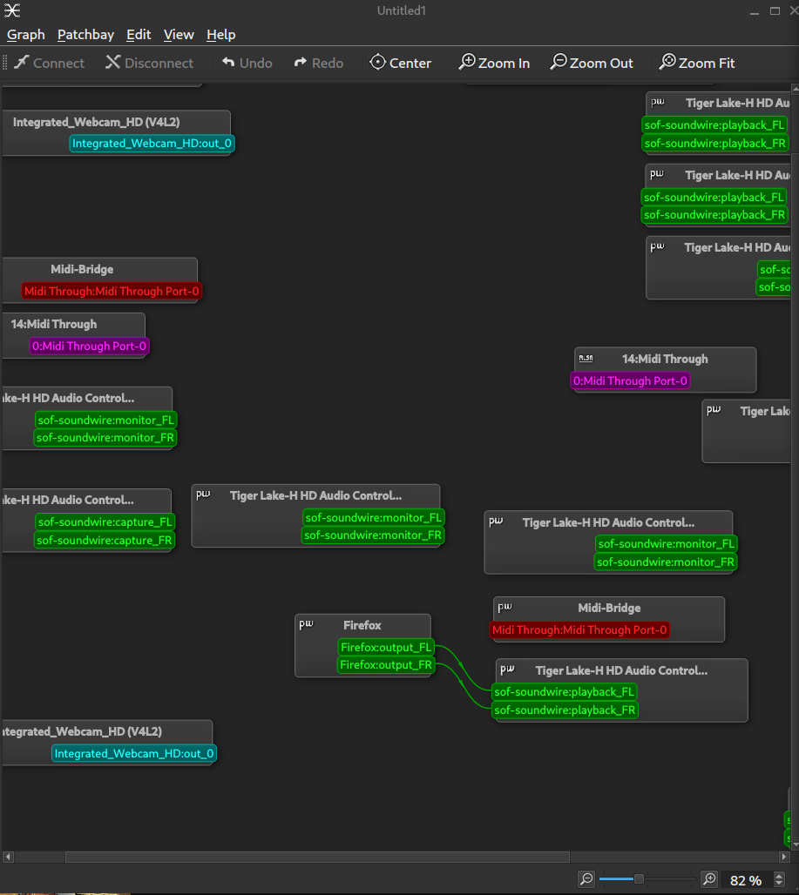

Audio on Linux
Taking a leap into understanding a little more about Pipewire since pulseaudio is being a pain and my mic is not working on my archlinux system either.
Refs:
- https://www.youtube.com/watch?v=HxEXMHcwtlI
- Soundcard is the DAC to convert analog sound to digital (and vice-versa)
- Soundcards also include other hardware for amplifiers etc.
- Kernel has a driver that will allow interaction with the sound card
- OSS (Open sound system) was the first sound driver.
- OSS is now replaced by ALSA (Advanced Linux Sound Architecture).
- ALSA provides the required drivers to interact with different forms of devices (mic, headphone, speaker etc.)
- ALSA doesn’t allow multiple inputs to one output (multiplexing)
- Program (client) -> Pulseaudio (server) -> ALSA (driver) -> sound card
- This moves the responsibility of sampling and mixing from ALSA or the card to the server.
- The server can also take in multiple inputs from the microphone and push that into multiple programs (outputs)
- JACK (Jack Audio Connection Kit) is also a sound server that works better with pro-audio tools.
- JACK is more flexible than pulseaudio but is a bit more difficult to use. (as if pulseaudio is easy to troubleshoot…)
- JACK also has much smaller latencies.
- Pipewire - hopefully the ultimate replacement of both Pulseaudio and JACK.
- Pipewire works as a drop-in replacement for Pulseaudio and JACK.
- Pipewire needs the session plumber (wireplumber) to actually route audio to devices.
- streambay is a Pipewire graph GUI interface.
1. Pipewire installation
- Install the following:
- pipewire
- pipewire-docs for documentation
- wireplumber for pipewire session management
- wireplumber-docs for wireplumber documentation
- qpwgraph for Pipewire Patchbay
- pipewire-alsa to route all applications using ALSA through pipewire (and remove pulseaudio-alsa if installed)
- pipewire-pulse to replace pulseaudio and pulseaudio-bluetooth
- pipewire-jack for JACK support
Playing anything after installation should just work. qpwgraph can be used to visualize the sources and sinks.
 - Audio playback works after reboot too, without any extra configuration.
- To check the microphone, first test on https://mictests.com
- Mic still doesn’t seem to be working.
- Checking the graph, when firefox tries to record, the capture device is connected to the Tiger Lake-H HD Audio Controller (Microphone (*)) device which I would assume to be the right one. It is also labelled as a capture device so that tracks too.